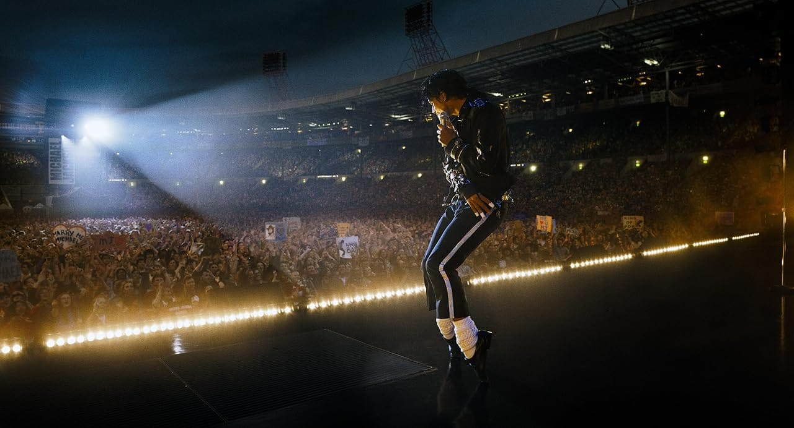

“Michael” chega a US$ 1 bilhão de bilheteria e se torna a maior cinebiografia da história

“Michael” chega a US$ 1 bilhão de bilheteria e se torna a maior cinebiografia da história
Após anos de espera, a cinebiografia do Rei do Pop finalmente chega aos cinemas para contar a história de vida de Michael Jackson. O longa alcançou um feito histórico ao ultrapassar a marca de US$ 1 bilhão em bilheteria mundial, tornando-se a primeira cinebiografia a atingir esse número e consolidando mais um grande sucesso da marca Michael Jackson.
Dirigido por Antoine Fuqua e produzido por Graham King, responsável por sucessos do gênero como Bohemian Rhapsody, o filme tem a proposta de apresentar um retrato autêntico do artista, equilibrando momentos de sua vida pessoal com os maiores marcos de sua carreira. O roteiro é assinado por John Logan, conhecido por trabalhos como Gladiador, O Aviador e a franquia 007.
A produção tinha uma missão complicada: como transformar a vida da pessoa mais famosa do mundo em apenas um filme? Michael Jackson viveu uma trajetória marcada por sucesso, polêmicas e acontecimentos que mudaram a história da música. Condensar tudo isso em poucas horas de forma com que se conectasse com o público parecia impossível.
A solução encontrada pela equipe veio de dentro da própria família Jackson.
Jaafar Jackson, sobrinho de Michael, foi escolhido para interpretar o cantor. A escalação gerou dúvidas por ele nunca ter atuado profissionalmente e por fazer parte da família. No entanto, bastaram as primeiras cenas para que as desconfianças desaparecessem. O talento da família parece correr em suas veias, e Jaafar entrega uma atuação impressionante, captando os trejeitos, a voz, a dança e a essência do tio de forma surpreendente.
O elenco principal encontra um equilíbrio entre nomes consagrados e novos talentos, o que faz o filme funcionar muito bem. Colman Domingo interpreta Joe Jackson, pai de Michael, e é, provavelmente, o ator mais prestigiado do elenco, com diversos trabalhos de destaque e indicações ao Oscar.
Nia Long, conhecida por seus papéis em comédias dos anos 1990, dá vida à matriarca Katherin. Já Miles Teller, conhecido por filmes como Top Gun: Maverick e Quarteto Fantástico, interpreta John Branca, advogado e empresário de Michael.
Os irmãos Jackson também recebem destaque no elenco:
Joseph David-Jones — Jackie Jackson;
Rhyan Hill (estreante) — Tito Jackson;
Jamal R. Henderson — Jermaine Jackson;
Tre Horton — Marlon Jackson;
Jessica Sula — La Toya Jackson.
Já nas fases infantis, os personagens são interpretados por:
Juliano Krue Valdi — Michael Jackson;
Nathaniel Logan McIntyre — Jackie Jackson;
Judah Edwards — Tito Jackson;
Jayden Harville — Jermaine Jackson;
Jaylen Lyndon Hunter — Marlon Jackson.
A história começa nos anos 60’, acompanhando os primeiros passos dos Jackson 5, que se apresentavam em bares e pequenos eventos até chamarem a atenção da Motown, gravadora que mudaria o destino da família. A partir daí, o filme acompanha a ascensão de Michael, sua busca por independência em relação ao controle do pai e o início de sua carreira solo. A narrativa passa pelas eras Off the Wall, Thriller e Victory, encerrando-se no auge da ascensão da era Bad.
Nas primeiras semanas, a recepção da crítica especializada foi dividida. Já o público abraçou o filme.
A fotografia recria com fidelidade a atmosfera vivida pelos fãs durante cada fase da carreira de Michael. Os figurinos são impecáveis, as interpretações convencem e Jaafar Jackson é o grande destaque. Em diversos momentos, é fácil esquecer que quem está na tela não é o próprio Rei. As coreografias são executadas com precisão, enquanto as recriações de videoclipes e apresentações históricas impressionam pelo nível de detalhe.
Apesar dos muitos acertos, o filme deixa a sensação de que parte da história ficou de fora — e isso realmente aconteceu. Diversas cenas precisaram ser cortadas por questões jurídicas relacionadas às acusações enfrentadas por Michael ao longo da vida. Além disso, personagens importantes, como Janet Jackson, Randy Jackson e Diana Ross, tiveram suas participações removidas, obrigando a produção a regravar cenas e adaptar parte da narrativa. Essas mudanças acrescentaram cerca de US$ 50 milhões ao orçamento, e a ausência de alguns acontecimentos importantes é perceptível para quem acompanha a trajetória do artista.
No geral, Michael foi inicialmente orçado em US$ 150 milhões. Entretanto, as regravações e os impactos da greve dos atores elevaram o custo para aproximadamente US$ 200 milhões. Ainda assim, o investimento se mostrou acertado: o filme ultrapassou a marca de US$ 1 bilhão em bilheteria e entrou para a história como a maior cinebiografia de todos os tempos.
O resultado é um trabalho ambicioso, feito por uma equipe que compreendeu o tamanho da responsabilidade de retratar a vida de Michael Jackson. É impossível condensar toda a trajetória do Rei do Pop em um único filme. Mesmo que alguns fãs sintam falta de momentos importantes, fica evidente o cuidado da produção em entregar uma homenagem digna de um dos maiores artistas da história da música. Agora, resta aguardar ansiosamente pela continuação dessa história.
Feito por: G.abbsp